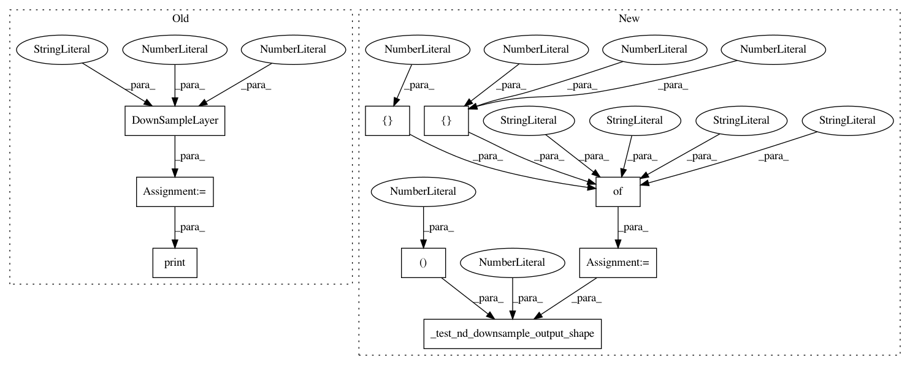

863a9dcee691e850e79d97a16abb977e24324fa1,tests/downsample_test.py,DownSampleTest,test_3d_avg_shape,#DownSampleTest#,28
Before Change
def test_3d_avg_shape(self):
x = self.get_3d_input()
down_sample_layer = DownSampleLayer("AVG", 2, 2)
out_down_sample_avg = down_sample_layer(x)
print(down_sample_layer)
with self.test_session() as sess:
sess.run(tf.global_variables_initializer())
out = sess.run(out_down_sample_avg)
self.assertAllClose((2, 8, 8, 8, 8), out.shape)
After Change
output_shape=(2, 6, 6, 6, 8))
def test_3d_avg_shape(self):
input_param = {"func": "AVG",
"kernel_size": [3, 3, 2],
"stride": [3, 2, 1]}
self._test_nd_downsample_output_shape(rank=3,
param_dict=input_param,
output_shape=(2, 6, 8, 16, 8))
def test_3d_const_shape(self):
input_param = {"func": "CONSTANT",
"kernel_size": [1, 3, 2],
In pattern: SUPERPATTERN
Frequency: 3
Non-data size: 9
Instances
Project Name: NifTK/NiftyNet
Commit Name: 863a9dcee691e850e79d97a16abb977e24324fa1
Time: 2017-07-17
Author: wenqi.li@ucl.ac.uk
File Name: tests/downsample_test.py
Class Name: DownSampleTest
Method Name: test_3d_avg_shape
Project Name: NifTK/NiftyNet
Commit Name: 863a9dcee691e850e79d97a16abb977e24324fa1
Time: 2017-07-17
Author: wenqi.li@ucl.ac.uk
File Name: tests/downsample_test.py
Class Name: DownSampleTest
Method Name: test_3d_const_shape
Project Name: NifTK/NiftyNet
Commit Name: 863a9dcee691e850e79d97a16abb977e24324fa1
Time: 2017-07-17
Author: wenqi.li@ucl.ac.uk
File Name: tests/downsample_test.py
Class Name: DownSampleTest
Method Name: test_2d_const_shape